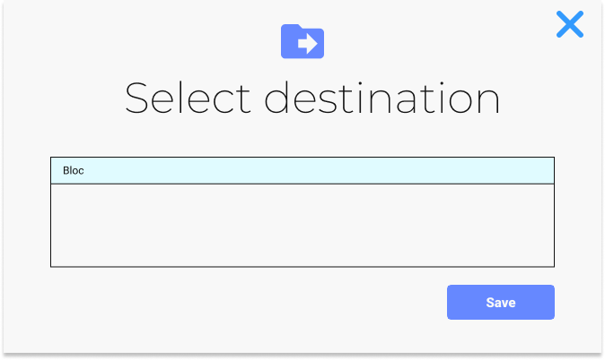
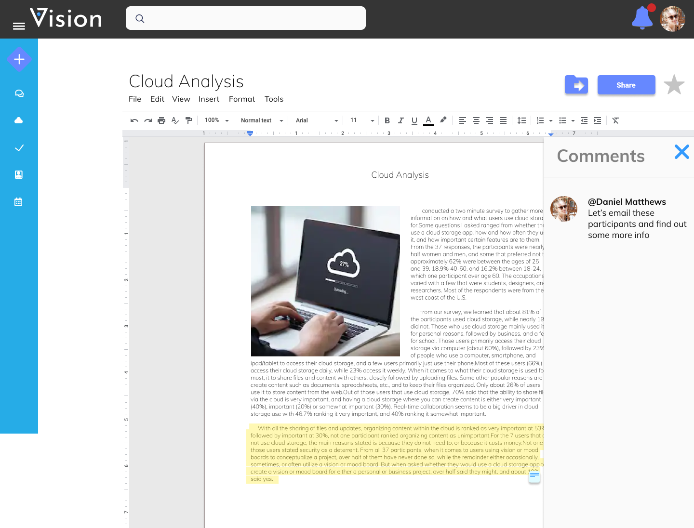
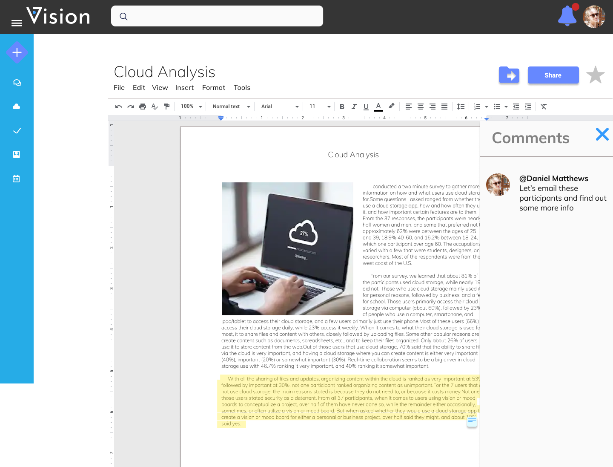
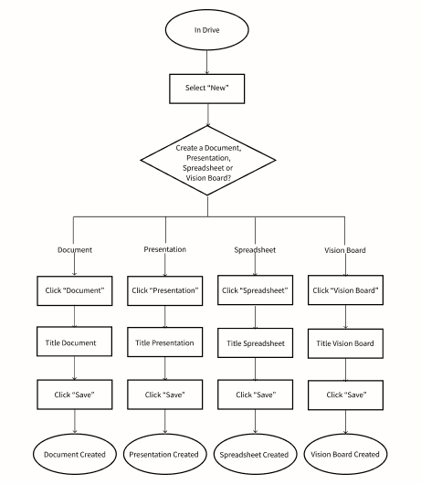
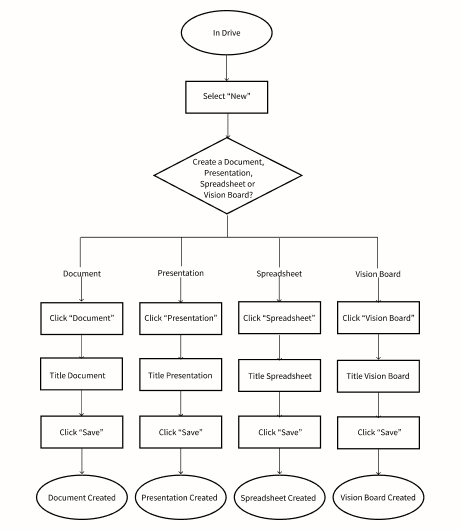

Hi-Fi Mockups and Testing
From the prior usability test, I iterated my designs and created High-Fidelity Mockups based on user feedback. I then continued onward conducting in-person testing with these mockups.
Desktop and Adding Content
In this mockup, I created a Quick Access section where users have the option to switch between Recent, Starred, and Shared. This decision allows the most important aspects to be on display without having to scroll the page. Upload
buttons were added to the homepage, and the Calendar was switched to a horizontal scroll which moves with actual-time. As for the side-navigation, I added icons to each menu item as well as the option to collaps the navigation. Instead
of alerts being at the top center of the page, I added and alerts section with a drop-down menu for notifications. Particpants liked that the homepage made everything easily accessible and they could upload from here. However, the
sections and the tiles are the same shade of blue and blend together.
Organizing Content
For organizing content, I prototyped the file and folder tiles and kept the process the same. I added the move-icon that is shown when you are inside a file. Users liked this and said it created consistency and acted as a reminder of
the task at hand.
Pinning to Vision Board
Pinning to a Vision Board, I changed the prompted pop up to a call-to-action blue tile. Once clicked, users are prompted with the option to include a hyperlink or to upload content. Participants liked this design better, and felt the
CTA button was instinctive.
Tagging and Commenting
In response to the feedback from the wireframe usability tests, I combined the tagging and commenting feature. It is still accessed by highlighting a section and right clicking "Tag/Comment". Here, the users
type their tag or comment, and click enter. After clicking enter, a small post-it icon appears for the section where the comment is located, and the area remains highlighted. Participants liked this idea, but when it came to saving the
post-it, half the participants were confused and required extra guidance.
A/B Testing
With the style guide created, I built a mobile prototype and conducted preference tests to ensure positive design decisions. It was important to make sure that both mobile and desktop designs
remained cohesive.
52% of users chose swiping to view each section.
52% of users chose the blue sections over dividers.
From the preference test for the Quick Access and Drive layouts, I learned that half the users chose the horizontal swiping to view each section over clicking the carrot to change, and then vertical scrolling.
From this I decided to
try a new approach that allowed users to easily change without excessive scrolling.
My User testing results were that both my desktop and mobile were easy to navigate. Creating a Create icon was beneficial to a simpler flow. Moving, sharing, and starring was streamlined across both mobile and desktop. The goal was to
keep things as uniform as possible across both devices.
Final Outcome
Desktop and Mobile Home, Adding Content


I created boxes for each section and used the light blue only for an upcoming event for the day and the document tiles. I changed the name of the original Calendar to Agenda, and created a separate section for a
calendar so that users
could view both their agenda and monthly calendar on their homepage. The Agenda went back to a vertical scroll which the tick would move in real-time. The side navigation bar is collapsible, and it is on every page throughout the
prototype. Instead of having an upload button, there is a create icon where a pop out occurs with the options to create a document, spreadsheet, presentation, vision board, upload, and folder.
Organizing Content

Pinning to Vision Board
Tagging and Commenting
 

I changed the design of the post-it to a pop-out that is cohesive with the other pop-outs. I created and "Upload" CTA button. Participants successfully tagged and left a comment with the addition of the upload
button. Users appreaciated the additional feature of viewing the comments on the side of the page, rather than the original idea of a post it appearing with the comment or tag.
Conclusion + Takeaways
After completing this project, I’ve gained a lot of insight into what worked and what didn’t. I learned that paper prototypes are a great way to quickly test an idea before building out a lo-fi version. Keeping all your sketches,
hand-drawn prototypes organized and together is extremely helpful when looking back and creating a case study. If I were to change something about the way I went about this project, it would be to constantly look back at the user
stories and user personas in order to stay within scope. I found myself getting excited about the additional features that I wanted to add onto the app that essentially I completely built out both a mobile app and desktop app and in the
end had to trim back some frames (I saved them though, just in case!) UsabilityHub turned out to be an excellent tool for quick A/B testing, which ended up being very helpful in my design decisions.
VIEW PROTOTYPE


 
